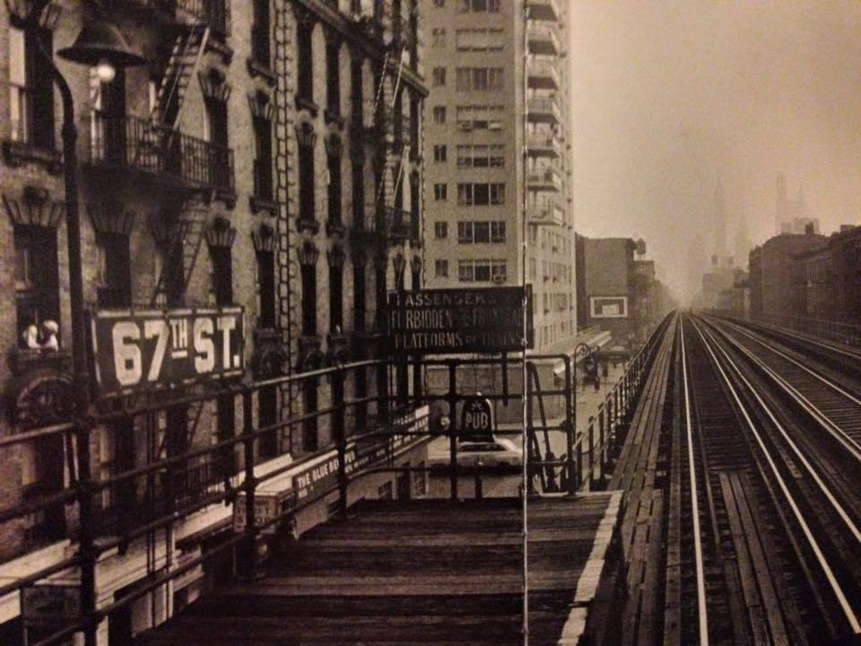

The 67th Street Station of the Third Avenue El–a 1950s photo but unclear (at least to me) if it was taken after the last train ran on this line (which was in May 1955) or perhaps just when no train happened to be in sight on the tracks. Photo by William Klein.